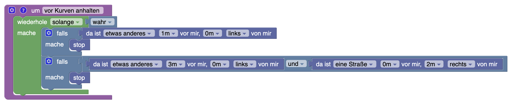
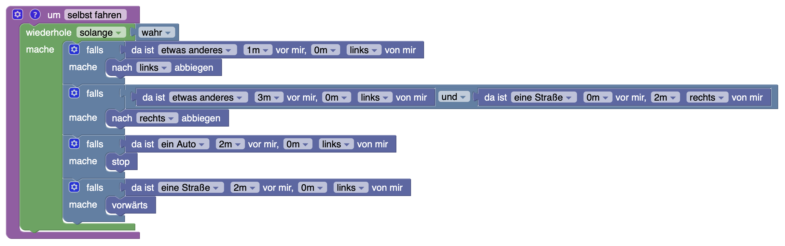

Ein einfacher Bot
In diesem Abschnitt programmieren wir das Auto so, dass es völlig selbstständig und ohne Unfälle um den Kurs fährt. Dazu müssen wir uns um folgende Sachen kümmern:
- Das Auto muss bei Kurven abbiegen.
- Es darf auch nicht mit anderen Autos zusammenstoßen.
Vielleicht hast du auch schon die eine oder andere Idee, wie man das erreichen könnte? Wir haben uns überlegt, es folgendermaßen anzugehen:
- Zuerst erweitern wir das Programm aus dem vorherigen Abschnitt so, dass das Auto auch vor Kurven anhält.
- Dann programmieren wir ein, dass das Auto bei Kurven automatisch abbiegt.
- Zum Schluss erweitern wir den Algorithmus so, dass unser Auto von selbst losfährt und nicht mit anderen Autos kollidiert.
Am Ende wirst du dich entspannt zurücklehnen können, während dein Auto Runde um Runde absolviert. Bist du bereit? An die Arbeit!
Vorsicht, Kurve!
Wir möchten jetzt erreichen, dass das Auto nicht nur vor dem Ende der Straße, sondern auch vor Kurven anhält. Das geht mit weiteren Fallunterscheidungen.
Aufgabe. Positioniere das Auto an einer Linkskurve. Wie müssen wir unsere Fallunterscheidung gestalten, damit das Auto vor Linkskurven anhält?
Vielleicht hast du es schon bemerkt: die Linkskurven haben wir eigentlich bereits einprogrammiert. Da das Auto auf der rechten Straßenseite fährt, bedeuten Linkskurven, dass das Auto bis ans Straßenende fährt und dann nach links abbiegt. Die Rechtskurven sind etwas trickreicher, aber nicht schwierig.
Aufgabe. Positionere das Auto an einer Rechtskurve. Was müssen die Sensoren hier anzeigen?
Bei Rechtskurven dürfen wir nicht bis ganz ans Straßenende fahren. Konkret muss der Sensorblock also so eingestellt werden, dass das Auto etwas weiter vorne nach dem Ende der Straße Ausschau hält.
Aufgabe. Füge eine zweite Fallunterscheidung ein, die das Auto nach der beschriebenen Logik vor Rechtskurven anhalten lässt. Wie schlägt sich dieser Algorithmus?
Wie du merkst, ist diese Logik nicht ganz korrekt, denn das Auto hält jetzt bei Linkskurven zu früh an. Das liegt daran, dass das Straßenende allein noch nicht ausschlaggebend für eine Rechtskurve ist. Wir müssen noch überprüfen, ob die Straße auch nach rechts weitergeht.
Aufgabe. Verwende eine und-Verknüfung aus der Kategorie Logik, um Rechtskurven korrekt zu erkennen.
 Wenn du jetzt Gas gibst, sollte das Auto von selbst vor jeder Kurve anhalten.Aufgabe. Drehe ein paar Runden und überprüfe, ob das Programm richtig funktioniert.
⭐️ Aufgabe. Erweitere das Programm so, dass das Auto bei Kurven selbstständig abbiegt.

Jetzt sollte es ausreichen, die ⬆-Taste deiner Tastatur gedrückt zu halten. Solange du nicht mit anderen Autos kollidierst, sollte dein Auto automatisch abbiegen.
Gas geben und bremsen
Es fehlt nicht mehr viel zu einem selbstfahrenden Auto. Wir müssen noch dafür sorgen, dass es von selbst beschleunigt und nicht mit anderen Autos kollidiert.
⭐️ Aufgabe. Programmiere ein, dass das Auto nicht in andere Fahrzeuge hineinfährt.
Aufgabe. Überprüfe, ob dein Programm richtig funktioniert.
⭐️ Aufgabe. Erweitere den Algorithmus so, dass das Auto von selbst losfährt.
Aufgabe. Lass dein Auto ein paar Runden drehen.
Aufgabe. Lüfte dein Zimmer und schaue dann nach, ob das Auto noch fährt.
👩💻🎉🥳🎊 Das Auto fährt jetzt völlig von selbst! 👩💻🎉🥳🎊